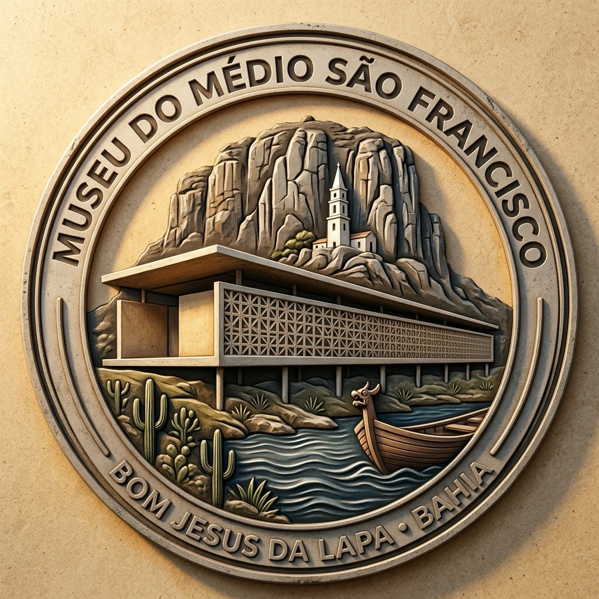

Pular para o conteúdo principal
Museu do Médio São Francisco · Bom Jesus da Lapa, Bahia
·
Primeira sala aberta ao público (Projeto Conceitual & Acervo Digital)
◐ Alto contraste
PT
EN
PDF do Projeto (56 p.) ↗
Cartas Institucionais ↗

Museu do Médio São Francisco
Bom Jesus da Lapa, Bahia · Natureza, História e Acervo Digital
O Museu
Salas (1–19)
Acervo & Titulares
Cidades do Rio
Linha do Tempo
Mapa
Pesquisa
Participe
🔍
Buscar no acervo...
O Museu
Salas (1–19)
Acervo & Titulares
Cidades do Rio
Linha do Tempo
Mapa
Pesquisa
Participe
←
→
✕ Fechar
Crédito obrigatório (Regra 3.5)
Onde está o original
Fontes documentais
Como citar este item
Use as setas ← → ou Esc